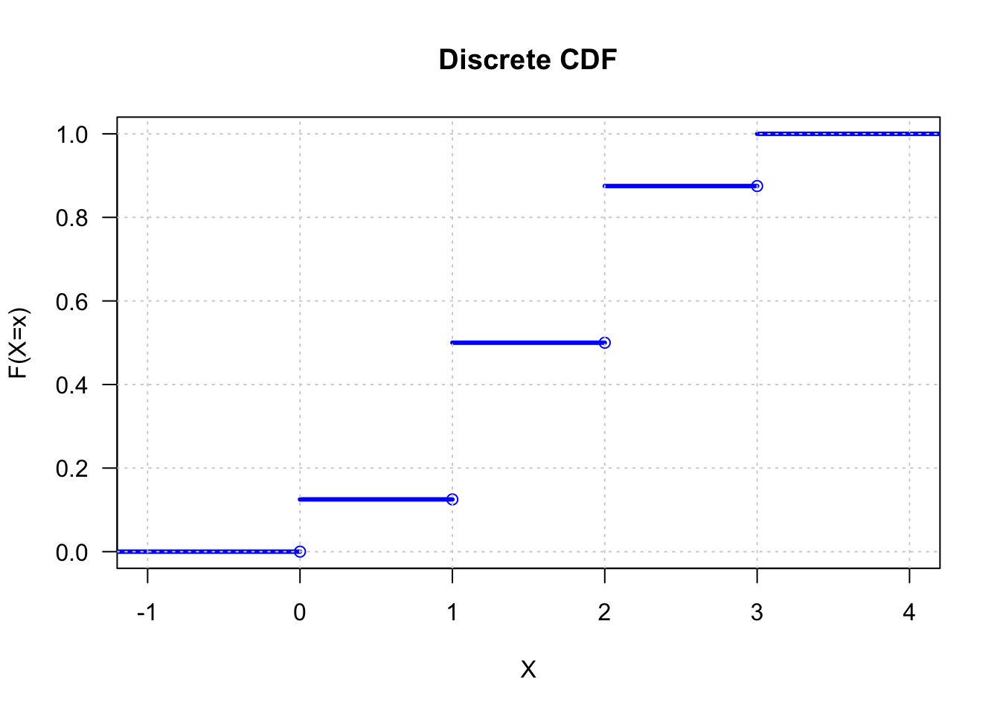
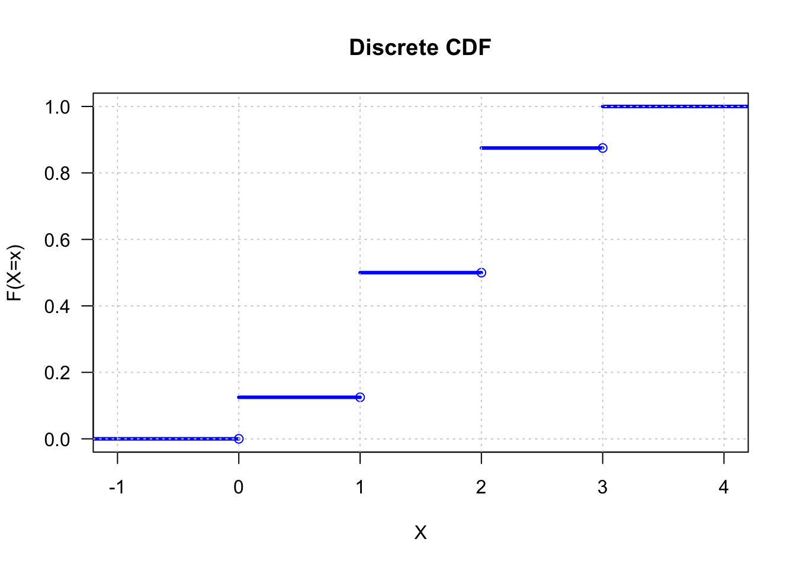

library(DiscreteDists)
x <- 0:3
fx <- c(0.125,0.375,0.375,0.125)
plot_discrete_cdf(x, fx, las=1, main="Discrete CDF")
Definition 1.4.1 A random variable is a function from a sample space \(S\) into the real numbers.
Suppose \(S = \{s_1,\ldots, s_n\}\) and there is a probability function \(P\) on random variable \(X\) with range=\(\{x_1,\ldots,x_m\}\), then,
\[ P(X = x_i) = P({s_j \in S: X(s_j)= x_i}) \]
Example 1.4.3 (Three coin tosses-II)
Consider experiment of tossing a fair coin three times. Define the random variable \(X\) to be the number of heads obtained in three tosses.
The complete enumeration of X for each point in the sample space is
\[\begin{array}{c c c c c c c c c} \hline s & HHH & HHT & HTH & THH & TTH & THT & HTT & TTT\\ \hline X(s) & 3 & 2 & 2 & 2 & 1 & 1 & 1 & 0 \\ \hline \end{array}\]The range for the random variable \(X\) is \({\it{X}}=\{0,1,2,3\}\).
The probability function is:
\[\begin{array}{c c c c c} \hline x & 0 & 1 & 2 & 3 \\ \hline P(X=x) & \frac{1}{8} & \frac{3}{8} & \frac{3}{8} & \frac{1}{8} \\ \hline \end{array}\]For example, \(P(X=1) = P({HTT, THT, TTH}) = \frac{3}{8}\)
Definition 1.5.1 the cumulative distribution function or cdf of a random variable \(X\), is defined by:
\[ F(X) = P(X \le x), \text{ for all } x \]
Example 1.5.2 (Three coin tosses-III) Experiment of tossing three fair coins. Let \(X\) be the number of heads observed. The \(cdf\) of \(X\) is
\[\begin{align*} F(x) = \begin{dcases*} 0 & if $-\infty < x < 0$\\ \tfrac{1}{8} & if $0 \le x \lt 1 $\\ \tfrac{1}{2} & if $1 \le x \lt 2 $\\ \tfrac{7}{8} & if $2 \le x \lt 3 $\\ 1 & if $3 \le x \lt \infty $\\ \end{dcases*} \end{align*}\]
library(DiscreteDists)
x <- 0:3
fx <- c(0.125,0.375,0.375,0.125)
plot_discrete_cdf(x, fx, las=1, main="Discrete CDF")
Theorem 1.5.3 The function \(F(x)\) is a cdf if and only if the following three conditions hold:
Example 1.5.4 (Tossing for a head)
Let \(X\) be a random variable for number of tosses required to get a head. If \(p\) is the probability of a head on any given toss, then, for \(x = 1,2,\ldots\),
\[ P(X = x) = (1-p)^{x-1}p \]
then,
\[ P(X \le x) = \sum_{i=1}^x P(X=i) = \sum_{i=1}^x (1-p)^{i-1} p \]
Note that the partial sum of the geometric series is:
\[ \sum_{k=1}^n t^{k-1} = \frac{1-t^n}{1-t}, \quad t \ne 1. \]
which can be induced by induction. Thus, the geometric cdf is given by:
\[\begin{align*} F_X (x) &= P(X \le x) \\ &= \frac{1-(1-p)^x}{1-(1-p)} . p \\ &= 1 - (1-p)^x, \quad x = 1,2,\ldots. \end{align*}\]
Proof that \(F_X(x)\) is a CDF:
We verify CDF using Theorem 1.5.3. above. Noting that for \(0 \lt p \lt 1\),
If \(x \lt 0\) i.e. negative number of heads then \(P(X=x)=0\) and \(P(X \lt x) = 0\). Then, \(lim_{x \rightarrow -\infty} F_X(x) = 0\).
If \(x \gt 0\), then \(lim_{x \rightarrow \infty} F_X (x) = lim_{x \rightarrow \infty} \{1 - (1-p)^x\} = 1\) since \((1-p)^x \rightarrow 0\) when \(x \rightarrow \infty\)
Since \(F_X(x) = \sum_{i=1}^x (1-p)^{i-1} p\), and \(0 \lt p \lt 0\), the sum contains positive additions, which means \(F_X(x)\) is non-decreasing function of x.
Since \((1-p)^\epsilon \rightarrow 1\) when \(\epsilon \rightarrow 0\) and,
\[\begin{align*} F_X(x) &= 1 - (1-p)^x \qquad x=1,2,\ldots \\ F_X(x+\epsilon) &= 1 - (1-p)^{x+\epsilon} \\ &= 1 -(1-p)^x(1-p)^\epsilon \\ lim_{x \downarrow 0} F_X(x +\epsilon) &= 1 - (1-p)^x.1 \\ &= F_X(x) \end{align*}\]
and we showed that \(F_X(x)\) is right-continuous. \(\qquad \blacksquare\)
Plot of Geometric CDF
\[ f(x) = P(X = x) = (1-p)^{x-1}p \qquad x = 1,2,3,\ldots \]
x <- 0:15
p <- 0.3
fx <- (1-p)^{x-1} * p
plot_discrete_cdf(x,fx,main="CDF for Geometric Distribution")\[\begin{align*} F_X(x) &= \frac{1}{1+e^{-x}} \qquad x \in \mathbb{R} \tag{1.5.5}\\ \end{align*}\]
Proof (1.5.5) is a continuous CDF
Since \(lim_{x \rightarrow -\infty} e^{-x} = \infty, \quad\) \(lim_{x \rightarrow -\infty} F_X(x) = 0\)
Since \(lim_{x \rightarrow \infty} e^{-x} = 0, \quad\) \(lim_{x \rightarrow \infty} F_X(x) = 1\)